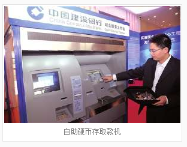

2012年11月中国央行营业管理部在北京推出，用于激活硬币流通。其宽度约是普通ATM机的二倍。硬币存款额最低十元， 一次最高额200元，最小硬币为1角。除了存款之外，这种存取款机还能实现硬币换整。2012年11月起， 央行营管部将在北京市范围内统筹安排自助硬币存取款机的布局，搭建硬币存取自助服务网络。
自助硬币存取款机，能够迅速、准确的办理硬币存取款业务，改变目前银行硬币处理基本依靠手工的落后局面，提高硬币业务处理效率， 降低群众的等候成本。自助硬币存取款机回收的硬币，将供应给硬币需求量大的商业企业。 记者了解到，硬币存款额最低十元，一次最高额200元，最小硬币为1角。
央行营业管理部从今年5月开始实施北京市现金服务贴心工程。此次布放硬币自助存取款机和银企共建现金服务联系点是实施贴心工程的最新措施。 据悉，央行营管部将在全市范围内统筹安排自助硬币存取款机的布局，搭建硬币存取自助服务网络。
放入一大把各种面值的硬币，几秒钟内就能自动识别并显示硬币的总金额，并帮助您换成大额纸币――昨日， 由中国人民银行营业管理部展示的北京市第一台自助硬币存取款机，让众多市民在“看新鲜”的同时，体验到了纸币硬币互换的方便快捷。
昨日上午，在央行营管部“银企共建现金服务联系点”启动仪式的现场，首次亮相的两台自助硬币存取款机无疑是最吸引人眼球的物件。 与普通的ATM机相比，这种硬币存取款机明显大了一号，宽度约是普通ATM机的二倍。
现场工作人员拿出一只塑料筐，里面是大大小小面值不等的硬币。“哗啦”一声，硬币一次性倒入存款口，短短10秒左右， 存取款机就自动完成了分拣统计。而且，屏幕上也立即清楚显示：1元的硬币35枚，共计35元；5角的31枚，共计15.5元； 1角的26枚，共计2.6元，总额是53.1元。然后，机器吐出一张50元纸币，同时3.1元的硬币也应声落在出币口内。